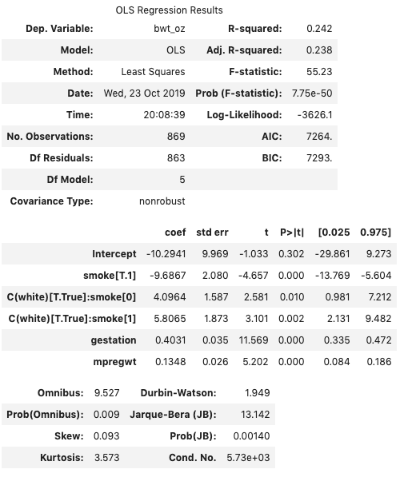

Machine Learning with Scikit-Learn¶
In these exercises, we’ll learn to fit and evaluate (in a basic way) machine learning models using the package scikit-learn.
The emphasis of these exercises is to help you get comfortable with the data wrangling component of machine learning so that in future machine learning courses you can focus on the theory underlying machine learning rather than struggling to figure out how to get your code to work. With that in mind, we will be quite cavalier with model fitting and evaluation. As with our statsmodels exercises, in which we quickly ran through a few models to practice implementing different models without
thinking too much about model selection and specification, this is not to suggest that this is how you should do your data science work!
Indeed, that is double true in the context of the exercises here, in which we will apply machine learning algorithms to the birth-weight data we used for our statsmodels exercises to predict birth weights. That is because machine learning algorithms are usually intrinsically opaque, meaning you can’t really tell how they are making their predictions, and that means they can be hard to audit. In school exercises, that’s rarely a big deal, but not being certain what your machine learning
algorithm is doing in the real world can literally kill people.
Take, for example, the case of a model distributed by the company Optum to providers who served millions of people. The goal of the model was to predict which patients who would be likely to consume more medical services in the future so doctors could give these patients – who presumably were having more health problems – extra preventive care.
The problem with this strategy, as was recently described in a paper in the journal Science, is that Black patients in the United States tend to use the medical system less for a variety of non-medical reasons (e.g. the history of Black Americans being used as unknowing test subjects for medical studies, or the fact that Black Americans tend to have lower incomes and are less likely to be insured than White Americans). And so because these patients were less likely to return to doctors for financial or social reasons, the algorithm interpreted that as evidence they were healthier (not poorer, or skeptical of the medical system), and so were less likely to recommend additional preventative care for black patients.
(Note: race wasn’t even a variable in the model. Presumably, the model simply found various inputs that were correlated with race, and when it saw those predicted lower need for extra medical attention. A variable that often implicitly codes for race, for example, is a person’s zipcode (the general area where they live).)
And so as a result, this machine learning algorithm resulted in black patients receiving fewer preventative medical interventions than white patients, even after taking into account other (medically relevant) factors.
So: in this exercise we’ll play with predict birth weights in infants. But do NOT think that just because it’s this easy to fit a model, it is appropriate to then go use these in the real world in contexts where people’s lives are affected.
(1) Load the data “smoking.csv”, which includes information on both biometrics of infants at birth, and information on mothers (variables prefixed with the letter “m”), from this MIDS repo. We’ll be working with this data in this exercise.
[1]:
import pandas as pd
import numpy as np
smoking_and_bw = pd.read_csv('https://media.githubusercontent.com/media/nickeubank/MIDS_Data/master/smoking.csv')
Formatting Your Data¶
Unlike in statsmodels, we can’t use pandas DataFrames in scikit-learn, so the first step in nearly any machine learning workflow (if you haven’t already been given a nice giant numpy array) is to convert our heterogeneous pandas array (which includes strings, categorical variables, integers, and floating point numbers) into a single large matrix that consists only of floating point numbers.
While you can do this by hand, this is most easily accomplished using the Patsy library, which will take a pandas array and a special formula string and return numpy arrays for use in libraries like scikit-learn. (patsy is actually the library that implemented the formulas we used in statsmodels to specify our regression models – here we’re just using it on its own).
Let’s assume that for most of these exercises, we want to predict birth weight (bwt.oz) using:
whether the mother is white, black, hispanic or of another ethnicity, (you have to code from
mrace– make sure you treat this as categorical!).whether the mother smokes (
smoke)Mother’s age (
mage)Mother’s weight (
mpregwt)Mother’s height (
mht)
For race, recall that in the raw data, mrace is coded as:
mrace mother’s race or ethnicity
0-5= white
6 = mexican
7 = black
8 = asian
9 = mix
99 = unknown
(We’re ignoring gestation because we don’t really know the value of gestation before the child is born, so we can’t use it to predict the birthweight of not-yet-born children!)
(2) Begin by using patsy.dmatrices() to create two datasets (y, which is the birth weights, and X, which is a matrix with all your “features” in a nice numpy array).
[2]:
# Re-group race to be white (0), hispanic (6), black (7), other (8, 9, 99)
smoking_and_bw['race_recoded'] = -1
smoking_and_bw.loc[smoking_and_bw.mrace <= 5, 'race_recoded'] = 0
smoking_and_bw.loc[smoking_and_bw.mrace == 6, 'race_recoded'] = 1
smoking_and_bw.loc[smoking_and_bw.mrace == 7, 'race_recoded'] = 2
smoking_and_bw.loc[smoking_and_bw.mrace > 7, 'race_recoded'] = 3
assert (smoking_and_bw['race_recoded'] != -1).all()
# Fix birth weight var name
smoking_and_bw = smoking_and_bw.rename({'bwt.oz': 'bwt_oz'}, axis='columns')
[3]:
import patsy
y , X = patsy.dmatrices('bwt_oz ~ C(race_recoded) + smoke + mage + mpregwt + mht', smoking_and_bw)
(3) Look at your features matrix X. How many columns does it have? How does that compare to the number of variables you used as inputs? (if they’re the same, you probably did something wrong…). Can you explain the difference?
If not read this!. This is one of the very nice things that patsy does for us!
[4]:
X.shape
[4]:
(869, 8)
[5]:
# I had 6 features going in, but I have 9 variables!
# that's because the categorical variable "race"
# was recoded into 3 indicator variables, so that
# all 3 are zero if the person is white,
# the first is 1 and the others are zero if the
# person is hispanic, the second is 1 and the
# others are zero if the person is black,
# and the third is 1 and the others are zero if the
# person is "other".
# This is called one-hot-encoding, and it's how we
# represent categorical variables.
Splitting Your Data¶
In machine learning, model selection is often accomplished by:
Splitting your data into two parts (a training set and a test set),
Training your model on the training set (i.e. set the parameters of your model to best explain the training data).
Test the model by using the parameters generated during that training to predict values for the testing data, then comparing the predicted values for the testing data to the actual values in the test data.
So suppose we just wanted to use linear regression as our model. We’d randomly pick half the rows of our data, then regress birth weight on the various variables (“features” in machine learning terminology) we specified above. Then we’d use the coefficients from that regression to predict birth weights for the half of children we didn’t use in our estimation, and see how different those predictions are from actual birth weights. If we find a model that performs well on our testing data, then we assume / hope that that model will also work well on new data (i.e. on children who haven’t been born yet whose weight we want to predict).
(Readers from a statistics background will recognize this is a kind of “cross-validation”, though a very simple version.)
So the first step in machine learning is to split our sample! Thankfully this is easy to do with the train_test_split function. So import it with from sklearn.model_selection import train_test_split, and split your data. To give you a sense of how it works, this is a common syntax:
from sklearn.model_selection import train_test_split
X_train, X_test, Y_train, Y_test = train_test_split(X, y,
test_size=0.5,
train_size=0.5,
random_state=42)
Where X_train is your training features, Y_train are your training birth weights, X_test are your test features, and Y_test are your test birth weights. The random_state var just ensures that you can re-create this split if you have to re-run your code (helpful for debugging).
(4) So start by splitting YOUR data.
[6]:
from sklearn.model_selection import train_test_split
X_train, X_test, y_train, y_test = train_test_split(X, y,
test_size=0.5,
train_size=0.5,
random_state=42)
Training your Model¶
And now it’s time to train our model!
scikit-learn is much loved because it has, like… every model ever already built in, and it provides a common interface (API) for all of them. Seriously – go check out all the supervised machine learning models that come with scikit-learn here.
Moreover, unlike many open-source projects, all of its models are really well documented, so you can read all about them! And check out this nifty guide to choosing an appropriate model.
For this exercise, let’s start by fitting a LinearRegression model.
Wait, you say: isn’t that what we did in statsmodels? Yes!
Data Science is a very fragmented little world, and some stuff gets recapitulated in slightly different wants in many different places, so it’s common to see different presentations of the same thing as you move from the world of statisticians to the world of computer scientists (i.e. machine learning).
(5) Import the Linear Regression model and instantiate it with code like:
from sklearn.linear_model import LinearRegression
my_model = LinearRegression()
[7]:
from sklearn.linear_model import LinearRegression
my_model = LinearRegression()
(6) Now fit your model against X and y. (If you’re unsure how to do this, read the docs for the model and look at the examples at the bottom!
Note: In statsmodels, the .fit() method returned a new fitted model. In sklearn, by contrast, .fit modifies (mutates) the model in place.
Machine learning, more than absolutely anything else, is concerned with predicting values, and that’s evident in what functionality is exposed by this linear model. As you may recall, in statsmodels, you could type .summary() and get something that looked like this:

A full printout of various dignostics, all your coefficients, estimates of confidence intervals for each coefficient, etc. etc. By contrast, LinearRegression from sklearn has no summary method. Indeed, the only output you really get for what the model has actually fit is `my_model.coef_
[8]:
my_model.fit(X_train, y_train)
my_model.coef_
[8]:
array([[ 0.00000000e+00, 4.88967789e+00, -9.57549359e+00,
-7.78152768e+00, -8.15196740e+00, 8.70134871e-03,
1.31058392e-01, 1.01948361e+00]])
Which I think we can all agree is not nearly as informative a print-out!
To be clear, you can recover many of the diagnostics for LinearRegression by digging around in other corners of sklearn, but what is made available speaks to the prioritizes of different users: sklearn is for making predictions; statsmodels is for statistics and understanding mechanisms (i.e. seeing if the coefficient on smoking is significant).
(7) OK, but we’re in the world of sklearn, so let’s do some prediction! Now that you’ve fit your model, use the predict method your data to create a set of predictions.
[9]:
predictions = my_model.predict(X_test)
Evaluating your Model¶
So we now have a trained model that we can use to predict birthweights. Yay! But is it any good?
All sklearn models have a method called score you can used to get the most basic evaluation of your model. The syntax is just:
my_model.score(X_test, y_test)
If you’re doing a classification model (something that tries to guess the category for each observation, like a model that evalutes a set of pictures and tries to figure out if the pictures are of cats, dogs, or humans), score will return an “accuracy” score (the percentage of observations you properly classified). For a regression model (trying to guess a continuous variable) it will give an R-squared score.
As you get more sophisticated, you will discover these basic scores are often inadequate for evaluating models, and you can turn to other evaluation functions found in sklearn.metrics. But for now we’ll just use the default score output of R-squared.
(8) What is the score of your model?
[10]:
my_model.score(X_test, y_test)
[10]:
0.11574796516106944
Machine Learning Workflow Summary¶
Congratulations! You just did you just fit your machine learning algorithm! And you also learned that sometimes what constitutes “machine learning” is in the eye of the beholder, given what you did today is the same thing you did in our last class without calling it machine learning. :)
But hopefully that’s given you a general sense for the work-flow of scikit-learn:
Prep your data:
import patsy
y , X = patsy.dmatrices('bwt_oz ~ C(race_recoded) + smoke + gestation + mage + mpregwt + mht', smoking_and_bw)
Split your data:
from sklearn.model_selection import train_test_split
X_train, X_test, Y_train, Y_test = train_test_split(X, y,
test_size=0.5,
train_size=0.5,
random_state=42)
Import and fit a model:
from sklearn.linear_model import LinearRegression
my_model = LinearRegression()
my_model.fit(X_train, y_train)
Evaluate your model:
my_model.score(X_test, y_test)
Use youre model to make predictions:
my_predictions = my_model.predict(X_test)
Comparing Models¶
Now that we have a baseline estimate for the performance of LinearRegression for this set of features and outputs, let’s try a different model and see how it compares!
(9) Now repeat your analysis using a Support Vector Regression (from sklearn.svm import SVR). How does the model perform? Is it better or worse than LinearRegression?
[11]:
from sklearn.svm import SVR
my_svr_model = SVR()
my_svr_model.fit(X_train, y_train[:,0]) # Otherwise get annoying warning, but doesn't actually matter.
my_svr_model.score(X_test, y_test)
/Users/Nick/miniconda3/lib/python3.7/site-packages/sklearn/svm/base.py:193: FutureWarning: The default value of gamma will change from 'auto' to 'scale' in version 0.22 to account better for unscaled features. Set gamma explicitly to 'auto' or 'scale' to avoid this warning.
"avoid this warning.", FutureWarning)
[11]:
0.007397249096226743
(10) One choice parameter for SVRs is the kernel it uses for weighting (again, this isn’t a class on machine learning, so don’t worry too much about what this means – just know that it’s a parameter of the model). Check the SVR documentation to figure out how to set the kernel to linear and see how it performs now.
[12]:
from sklearn.svm import SVR
my_svr_model = SVR(kernel='linear')
my_svr_model.fit(X_train, y_train[:,0]) # Otherwise get annoying warning, but doesn't actually matter.
my_svr_model.score(X_test, y_test)
[12]:
0.10234916441731523
(11) Now pick whatever regression model you’d like and see how it performs (some suggestions). Play with your model specifications and see how well you can do with your new model of one of the ones we used above.
[13]:
from sklearn.linear_model import Ridge
my_ridge_model = Ridge()
my_ridge_model.fit(X_train, y_train)
my_ridge_model.score(X_test, y_test)
[13]:
0.1163671199667089
Want More Practice?¶
Try replicating our attempts to predict whether infants would be born premature from the statsmodels exercises in scikit-learn. Start with a LogisticRegression, then try some different “classification models” for comparison!